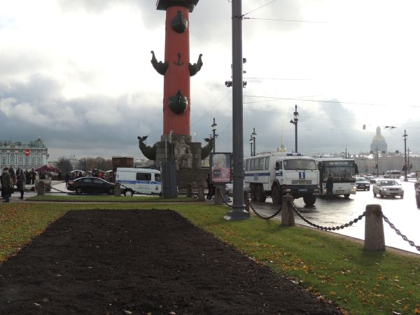

Навигация: Главная О нашем издательстве Главная О нашем издательстве
Архив: Апрель 2020 |
В Санкт-Петербурге прошла несанкционированная прогулка секты поклонения табаку. Задержаны 20 охранников ЧОП, госпитализированы 50.
Санкт-Петербург, 23 апреля 2021 В Санкт-Петербурге на Нагинской улице прошло первое шествие Секты сторонников Табака - так называет себя пока ещё не запрещённая организация, пропагандирующая употребление табака в его первозданном виде. Шествие должно было состояться 1 апреля около дома №15 в 13 часов. На шествии под девизами "Хватит сушить табак", и "Даёшь фермы свежего табака в Ленинградской области" должны были пройти до Садовнической улицы 15 человек. Окончание было запланировано на 14 часов. В связи с накалом политической обстановки, по требованию администраций округа "Невское" на Нагинскую улицу должны были выйти полицейские. Однако, из-за недостатка финансирования администрация МО "Невское" решило выслать охранников частного охранного предприятия ООО "Бурлеск-Нео", которое занималось охраной здания администрации МО. Охранники прибыли в полной боевой готовности за 2 часа до начала шествия.  Однако, каково было удивление администрации МО и ЧОПов, когда выяснилось, что на шествие никто не пришёл. Охранники стояли час под проливным дождём. В итоге администрацией МО "Невское" был отдан приказ "задерживать кого угодно". ЧОП решили задержать сами себя. Итогом стала крупнейшая драка в Петербурге за последние 10 лет. "Быть задержанным" не хотел никто из охранников - поэтому, сопротивлялись друг другу яростно, в ход шли дубинки и электрошокеры. Некоторым удалось нейтрализовать противника быстро - задержанные ими были увезены в 119 отдел полиции. Тем, кто сопротивлялся больше - повезло меньше, они получили множественные переломы и ушибы, и даже электротравмы из-за электрошокеров. Их увезли в 55 больницу - там им была оказана соответствующая медицинская помощь. После - пострадавшие были доставлены в 121 отдел полиции, и возвращены обратно в больницу под подписку о невыезде. По итогам несогласованной акции - задержано 20 сотрудников ЧОП, им грозит до месяца лишения свободы. Пострадало 55 человек. Из них - 5 с лёгкими травмами, 27 с среднетяжелыми, 19 находятся в палате интенсивной терапии, а 9 в реанимации. Из прохожих никто не пострадал. "Секта сторонников свежего табака" пока никак не комментирует ситуацию. |